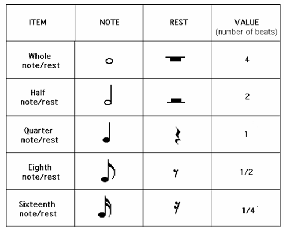
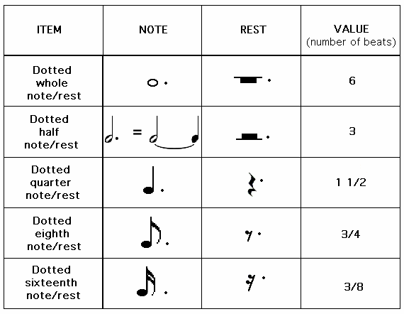
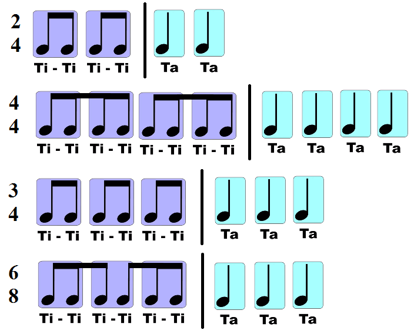

In Kodály syllables system (Kodály method), note values are assigned specific syllables that express their durations.
A dot increases the length of a note by one half its value.

A time signature is a fraction.
The denominator indicates which note is the beat. If the denominator is 4, the quarter note is one beat.
The numerator indicates the number of beats in each measure.If the numerator is 2, 2 quarter notes can fit in one beat.
Examples of time signatures include "4/4" ("common time"), "2/2" ("cut time"), "3/4", "5/4", "2/4", and so on.
Az ütemmutató egy törtszám, amely a zenemű vagy egy zenei részlet metrikus alapbeosztását mutatja.
Például 2/4 azt jelenti, hogy az ütem negyedekre van felosztva, és egy ütembe 2 negyed fér.
